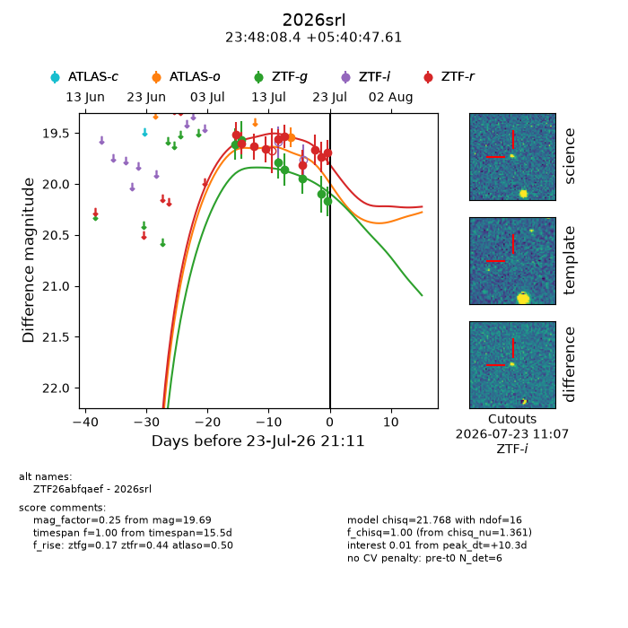
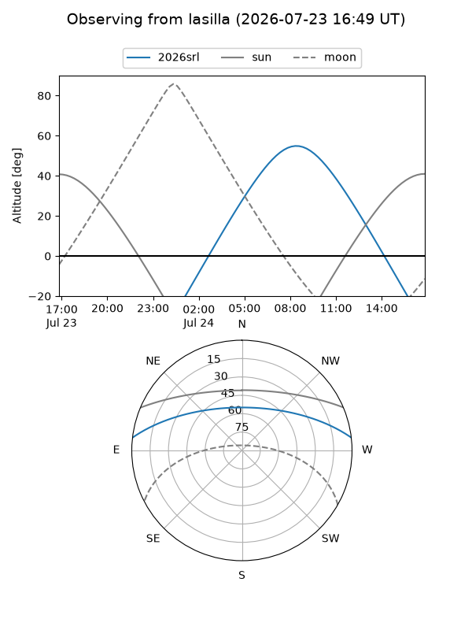
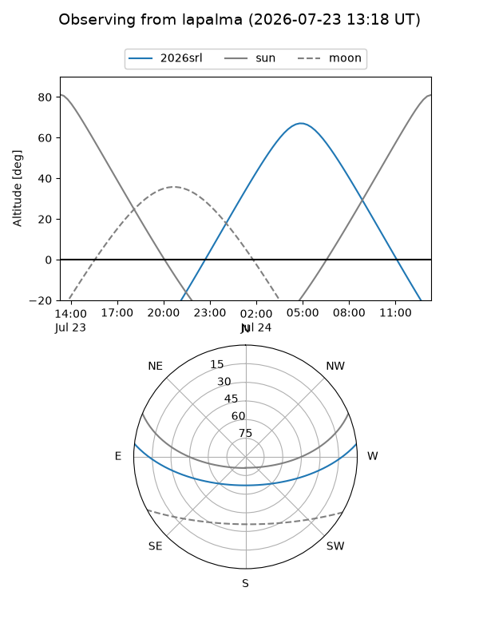
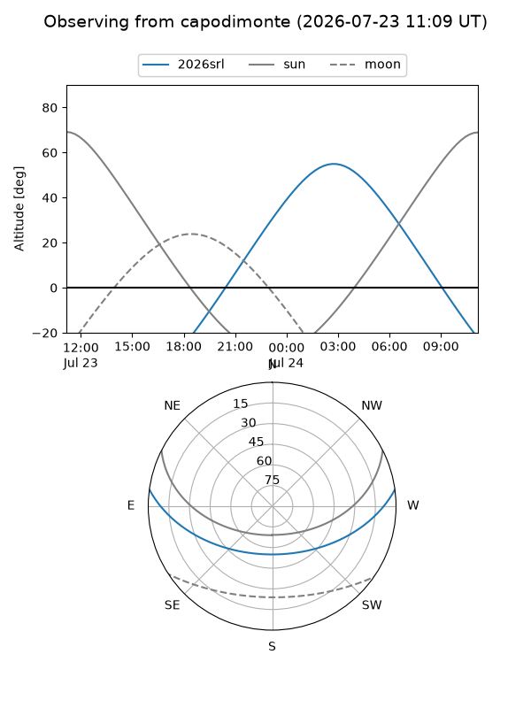
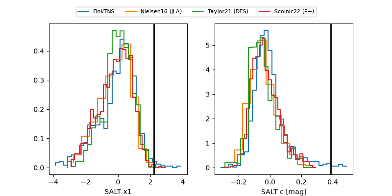

2026srl
Target 2026srl at 2026-07-23 21:14
Aliases and brokers:
FINK-ZTF: ztf.fink-portal.org/ZTF26abfqaef
Lasair-ZTF: lasair-ztf.lsst.ac.uk/objects/ZTF26abfqaef
ALeRCE-ZTF: alerce.online/object/ZTF26abfqaef
YSE-PZ: ziggy.ucolick.org/yse/transient_detail/2026srl
TNS name: wis-tns.org/object/2026srl
Direct TNS query: direct search
alt names
ZTF26abfqaef (ztf,fink_ztf)
2026srl (tns,yse)
Coordinates:
equatorial (ra, dec) = 357.0351,+5.67989
equatorial (HMS+DMS) = 23:48:08.42,+05:40:47.61
galactic (l, b) = (95.5829,-53.79671)
Flags:
TNS type: nan
peak dt: +10.3
Photometry:
last atlaso=19.54, ztfg=20.17, ztfr=19.69
1 atlaso, 7 ztfg, 10 ztfr detections
Lightcurve

Visibility



Additional plots
